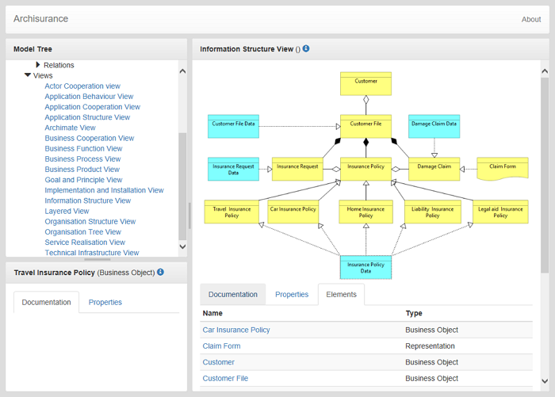

L'aperçu du rapport HTML vous permet de voir un rapport HTML généré pour le modèle actuellement sélectionné dans un onglet directement dans Archi. La possibilité d'enregistrer le rapport HTML est disponible depuis le menu Fichier->Rapport. Pour plus d'information, voir Rapports HTML
Aperçu du rapport HTML
L'aperçu du rapport HTML vous permet de voir un rapport HTML généré dans un onglet directement dans Archi.